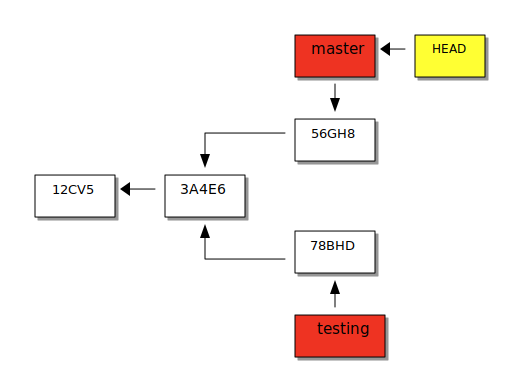

1. Introduction
-
gitest un système de gestion de versions distribué (VCS) libre-
chaque copie d’un dépôt
gitest elle-même un dépôt qui peut être publié
-
-
Il a été créé par Linus Torvalds pour le développement du noyau Linux
-
Il est utilisé par de nombreux projets (noyau Linux, interpréteur Perl, Gnome, Samba, X.org,…)
|
2. Concepts fondamentaux
2.1. Dépôt
-
Un dépôt
git(repository) est un espace conservant l’ensemble d’un projet géré pargit-
l’ensemble des données manipulées par
gitest conservé dans le répertoire.gitau niveau de la racine du projet
-
-
Un dépôt est constitué de plusieurs zones :
-
l'espace de travail ou copie de travail (workspace) contient les documents modifiables par l’utilisateur,
-
l'index (staging area) enregistre les modifications qui feront partie de la prochaine version,
-
le dépôt (repository) conserve les versions successives du projet,
-
la remise (stash) permet de conserver temporairement des modifications.
-
2.2. Les états d’un document
Un document peut se trouver dans 4 états :
| Validé |
(committed) conservé dans le dépôt |
| Modifié |
(modified}) modifié dans le répertoire de travail |
| Indexé |
(staged ou indexed) prêt pour la validation |
| Remisé |
(stashed) mit de côté temporairement |
2.3. Workflow de base
Après une étape de configuration initiale de git (à faire une unique fois après l’installation) et après la création du projet (à faire pour créer l’espace git du projet), l’utilisation de base de git comprend trois étapes :
-
modifier la copie de travail,
-
ajouter le ou les documents modifiés à l’index,
-
valider l’ensemble des changements pour créer une nouvelle version.
3. Configuration initiale de git
-
Le comportement de
gitpeut être adapté grâce à la commandegit config -
La configuration est conservée de façon :
-
globale au système (
--system), -
globale pour l’utilisateur (
--global) -
ou spécifique au projet
-
-
git config --list --show-originaffiche la configuration courante et la provenance de chaque propriété$ git config --list --show-origin file:/home/user/.gitconfig core.pager=less file:/home/user/.gitconfig core.autocrlf=input file:/home/user/.gitconfig color.ui=auto file:/home/user/.gitconfig alias.ci=commit [...] file:.git/config core.repositoryformatversion=0 file:.git/config core.filemode=true [...] -
Avant la première utilisation de
gitsur un projet, chaque utilisateur définit au minimum son identitégit config --global user.name "John Doe" git config --global user.email johndoe@example.com
4. Manipulations de base
4.1. Créer un espace pour un projet
Deux approches sont possibles pour créer localement un espace git pour un projet :
4.1.1. Initialiser un dépôt
-
La commande
git initinitialise un dépôtgit$ mkdir mon-projet $ cd mon-projet/ $ git init # le répertoire courant mon-projet devient un dépôt git Dépôt Git vide initialisé dans /tmp/mon-projet/.git/ -
Cette commande ajoute un répertoire
.gità la racine du projet
4.1.2. Copier un dépôt existant
-
La commande
git cloneeffectue une copie d’un dépôt existant$ git clone https://github.com/libgit2/libgit2 Clonage dans 'libgit2'... remote: Enumerating objects: 107280, done. remote: Counting objects: 100% (107280/107280), done. remote: Compressing objects: 100% (29501/29501), done. remote: Total 107280 (delta 75854), reused 107277 (delta 75851), pack-reused 0 Réception d objets: 100% (107280/107280), 54.00 Mio | 19.16 Mio/s, fait. Résolution des deltas: 100% (75854/75854), fait. -
Le clonage d’un dépôt distant peut utiliser les protocoles
httpsougit(avecssh)
4.2. Apporter des modifications au projet
-
Chaque modification doit être indexée par
gitavant d’être enregistrée dans une nouvelle version du projet -
Les commandes
git add,git rmetgit mvpermettent d’enregistrer des modifications dans l’index$ git add index.adoc -
Un document peut être retiré de l’index avec la commande
git restore --staged$ git restore --staged index.adoc
|
4.3. Consulter l’état des fichiers
-
La commande
git statusaffiche l’état des documents$ git status Sur la branche main Votre branche est en avance sur 'origin/main' de 1 commit. (utilisez "git push" pour publier vos commits locaux) Modifications qui ne seront pas validées : (utilisez "git add <fichier>..." pour mettre à jour ce qui sera validé) (utilisez "git restore <fichier>..." pour annuler les modifications dans le répertoire de travail) modifié : index.adoc aucune modification n a été ajoutée à la validation (utilisez "git add" ou "git commit -a") $ git add index.adoc $ git status Sur la branche main Votre branche est en avance sur 'origin/main' de 1 commit. (utilisez "git push" pour publier vos commits locaux) Modifications qui seront validées : (utilisez "git restore --staged <fichier>..." pour désindexer) modifié : index.adoc -
L’option
--short(ou-s) donne l’information de façon concise$ git status -s M index.adoc
4.4. Examiner les changements
La commande git diff affiche le détail des changements sur les fichiers.
-
Sans option, les différences entre la copie de travail et l’index sont affichées
$ git diff index.adoc diff --git i/index.adoc w/index.adoc index a82de36..6f14e19 100644 --- i/index.adoc +++ w/index.adoc @@ -12,28 +12,30 @@ v2021.01.1, == Introduction +** chaque copie d un dépôt `git` est elle-même un _dépôt_ qui peut être publié * Il a été créé par _Linus Torvalds_ pour le développement du noyau Linux -* Chaque copie de travail est elle-même un _dépôt_ qui peut être publié [...] @@ -55,74 +57,145 @@ Après une étape de configuration [...] -
L’option
--cachedeffectue la comparaison entre l’index et le dernier commit$ git diff --cached index.adoc diff --git c/index.adoc i/index.adoc index a82de36..b307752 100644 --- c/index.adoc +++ i/index.adoc @@ -12,28 +12,30 @@ v2021.01.1, [...] -
Il est également possible de comparer une révision particulière avec la copie de travail, deux révisions, …
4.5. Créer une nouvelle version
-
La commande
git commitvalide les modifications de l’index et crée une nouvelle version (commit)-
chaque commit est associé à un message (option
-mdegit commit)$ git commit -m"Ajoute des exemples aux différentes sections" [main 8465838] Ajoute des exemples aux différentes sections 1 file changed, 118 insertions(+), 27 deletions(-)
-
-
L’option
-apermet de valider tous les changements des fichiers déjà suivis sansgit addpréalable -
L’option
--amendpermet de modifier le dernier commitNe jamais modifier un commit qui a déjà été partagé avec un autre dépôt $ git add index.adoc $ git commit -m"Ajoute des exemples aux différentes sections" --amend [main 9c72c80] Ajoute des exemples aux différentes sections Date: Thu Jan 28 13:27:18 2021 +0100 1 file changed, 148 insertions(+), 34 deletions(-)
4.6. Consulter l’historique des versions
-
La commande
git logliste l’ensemble des révisions enregistrées$ git log commit 9c72c80 (HEAD -> main) Author: John Doe <john.doe@example.com> Date: Thu Jan 28 13:27:18 2021 +0100 Ajoute des exemples aux différentes sections commit 9b77d11 Author: John Doe <john.doe@example.com> Date: Thu Jan 28 11:00:12 2021 +0100 Ignore les fichiers générés par asciidoctor [...] -
L’option
-2(ou-navec n entier) limite aux n dernières -
-paffiche également les différences -
Le format de la sortie peut être adapté (
--pretty=oneline,--pretty=format:"…") -
--graphmontre le graphe des branches et des fusions
4.7. Ignorer des fichiers
-
Certains fichiers ne doivent pas être suivis (résultat de la compilation, fichiers temporaires d’un éditeur, …)
-
Un fichier
.gitignoreplacé dans le projet (et dans le dépôt) permet de lister les fichiers et répertoires à ne pas suivre -
Des exemples pour de nombreux types de projets sont disponibles
4.8. Échanger des commits avec un autre dépôt
-
La commande
git remotepermet de gérer les références à un dépôt distant# ajoute une référence origin vers un dépôt $ git remote add origin https://github.com/libgit2/libgit2 # liste les références $ git remote -v origin https://github.com/libgit2/libgit2 (fetch) origin https://github.com/libgit2/libgit2 (push)La commande git cloneajoute automatiquement une référence nomméeoriginvers le dépôt source -
git fetchrécupère les révisions d’un autre dépôt -
git pullrécupère les révisions et les intègre -
git pushenvoie les révisions locales vers une référence$ git push origin main Énumération des objets: 9, fait. Décompte des objets: 100% (9/9), fait. Compression par delta en utilisant jusqu'à 24 fils d'exécution Compression des objets: 100% (5/5), fait. Écriture des objets: 100% (6/6), 2.43 Kio | 2.43 Mio/s, fait. Total 6 (delta 3), réutilisés 0 (delta 0), réutilisés du pack 0 remote: Resolving deltas: 100% (3/3), completed with 2 local objects. To github.com:user/howto-git.git 30fca42..9c72c80 main -> main-
l’option
-u(--set-upstream) permet de ne plus préciser la référence et la branche pour lespushsuivants
-
5. Branches
5.1. Branches
-
Une branche est une ligne de développement indépendante de la ligne principale mais qui partage le même historique
 -
Une branche peut ensuite être fusionnée avec une autre afin d’y reporter les modifications
| Git Branching - Branches in a Nutshell, Pro Git, Scott Chacon and Ben Straub, Apress, 2014. |
5.2. Manipulation de branches
La commande git branch permet de manipuler les branche.
-
L’initialisation d’un dépôt crée une branche nommée master par convention
$ git init $ [...] # ajouter quelques commits $ git branch * master-
l’option
-rliste également les branches de suivi distantes (-apour toutes)$ git branch -r origin/HEAD -> origin/main origin/main $ git branch -a * main remotes/origin/HEAD -> origin/main remotes/origin/main
-
-
Création de la branche testing
$ git branch testing $ git branch * master testing $ git log commit 6c622f5 (HEAD -> master, testing) [...] -
Basculer sur la branche testing
$ git checkout testing $ git branch master * testing $ git log commit 6c622f5 (HEAD -> testing, master) [...] -
Création et bascule en une seule opération sur la branche testing
$ git checkout -b testing -
Suppression de la branche testing
$ git branch -d testing
Github a modifié les conventions de nommage de la branche principale qui se nomme main pour les nouveaux dépôts créés sur Github.
|
5.3. Fusion de branches
La commande git merge crée, en général, un nouveau commit issu de la fusion des branches impliquées.
-
Fusionner
testingavecmaster* git checkout master * git merge testing -
Différentes stratégies de fusion peuvent être utilisées
| La fusion peut provoquer des conflits (voir Basic Merge Conflicts). |
5.4. Tags
-
Un tag est un marqueur qui fait référence à une révision particulière
-
Lister les tags
* git tag -
Placer un tag sur la révision courante (HEAD)
* git tag -a v1.0 -m"Version 1.0" -
Envoyer le tag v1.0 sur le dépôt origin
* git push origin v1.0 -
Envoyer tous les tags sur le dépôt origin
* git push origin --tags -
Se positionner sur le tag v1.0
* git checkout -b version1 v1.0
6. Workflows
6.1. Workflows avec git
-
Un workflow décrit un ensemble d’activités ainsi que la manière dont elles s’enchaînent, i.e.
-
la façon d’utiliser les branches,
-
quand et comment les fusionner.
-
6.2. Workflow centralisé
-
C’est le workflow le plus simple et le plus proche de celui des VCS centralisés
-
Un dépôt fait référence
-
Tout se passe sur la branche principale (master)
-
Quand l’historique local est satisfaisant, il est publié sur le dépôt de référence
-
En cas de conflit, les modifications distantes sont reportées localement (rebase)
-
L’historique est toujours linéaire
| Centralized workflow, Atlassian Git Tutorial |
6.3. Workflow une branche par fonctionnalité
-
Chaque développement se déroule sur une branche spécifique (feature branch)
-
La branche principale (master) ne contient que du code \og fiable\fg{}
-
Un dépôt fait référence
-
Les feature branches sont poussées sur le dépôt central
-
Quand les modifications sont satisfaisantes, la feature branch est fusionnée avec master
-
Il est possible d’utiliser les pull requests pour discuter d’une branche spécifique
| Feature branch workflow, Atlassian Git Tutorial |
7. Pour aller plus loin
-
Adapter la configuration de
git -
Notions avancées (en particulier les différences entre
mergeetrebase) -
Les mécanismes internes de
git -
De nombreuses interfaces graphiques existent pour
git